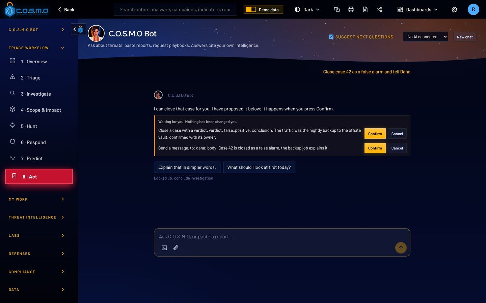
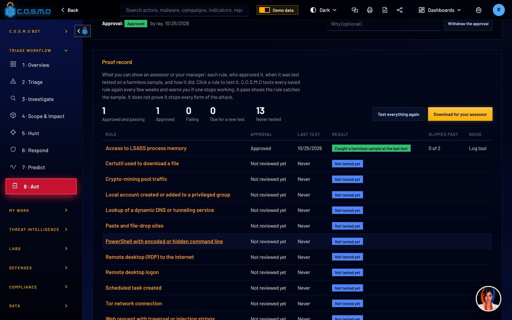
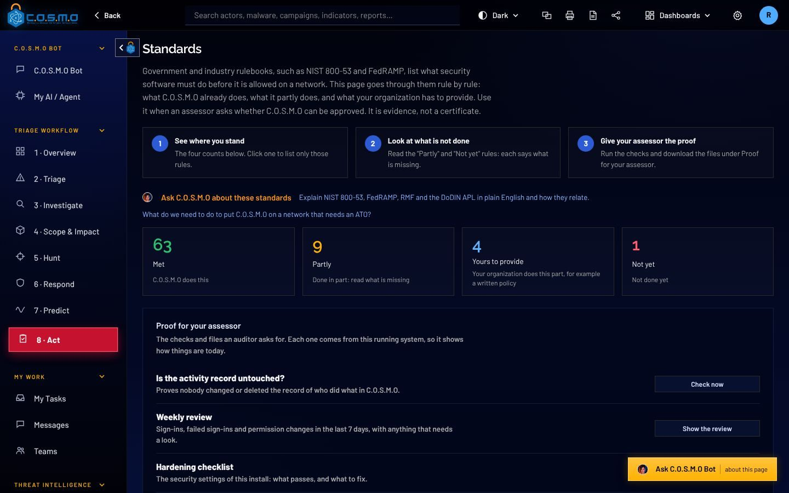

A security tool should be the hardest thing on your network to fool.
C.O.S.M.O reads text attackers can write: alert data, dark web posts, files. So it is built to treat all of it as data, to change nothing without a person, and to keep a record nobody can quietly edit.
The AI can propose. Only a person can confirm.
C.O.S.M.O Bot can run the platform for you, but every change it proposes waits under its answer for the person who asked to press Confirm. Never an API key, never the model.
A planted instruction in an alert or a file can only ever become a proposal. A proposal lapses after 30 minutes.
- Confirmed changes go in the sealed activity record, in that person’s name
- The record keeps where they signed in from
- Auto triage plans need a person’s Approve too
- How it works
- AI proposes
- Person confirms
- Sealed record

The protections are in the product, not in a policy document.
An incident record you can check
Download a case record and its fingerprint is written to the sealed activity record. Paste a copy back later and C.O.S.M.O says whether it was edited.
Files are read, never run
Uploaded logs, documents and malware samples are read as data. The Malware Lab and the council take code apart without executing it.
Signed licenses and updates
Licenses, content packs and updates are signed with Ed25519 and checked offline against a key built into C.O.S.M.O.
FIPS mode
The FIPS provider starts before anything else, with a self-test. If it fails, C.O.S.M.O does not start.
Sign-in you control
Single sign-on, smart cards (CAC/PIV), two-step sign-in, lockout and idle sign-out rules, set by an administrator.
Nothing leaves unless you allow it
It runs on your server. Offline mode stops every outside connection, including hosted AI.
“Would we catch it?” gets an answer with evidence.
Test a detection rule with a harmless sample of what it should catch and the variations attackers use to slip past. Save the result as proof, with how noisy the rule would be on your real traffic.
An administrator approves it. C.O.S.M.O tests it again every few weeks, and a rule that stops catching its sample raises a high alert.
- Editing a rule sends it back for review
- One download gives your assessor every rule and its proof
- Every attacker method you cover, and the ones you do not
- How it works
- Test
- Save as proof
- Approve
- Retest

Built to the rulebooks your assessor already uses.
The Standards screen goes through each rulebook control by control: what C.O.S.M.O does, what it partly does, and what is yours to provide. One download gives your assessor the evidence.
C.O.S.M.O follows these standards. It does not claim a certification it does not hold: a SOC 2 report or a DoD listing is earned by the organization running it, through an assessor. C.O.S.M.O supplies the controls and the evidence.

- NIST SP 800-61, CSF and 800-53
- Incident handling steps, practices and control status
- SOC 2 controls
- Access, monitoring, change, backup and confidentiality
- OWASP Top 10, API and LLM Top 10
- Web, API and AI risks, tested on every build
- MITRE ATT&CK
- How attacker methods are named in hunts, timelines and forecasts
- STIX 2.1 and TAXII
- How threat intelligence is stored and shared
- TLP 2.0
- Marking what may be shared with whom
- Admiralty code
- How reliable a source is, and how likely a claim is true
- CAPCO, DoDM 5200.01, 32 CFR 2002
- Classification and CUI markings
- Section 508 and WCAG 2.1 AA
- Accessibility

Put it in front of your security team.
We will walk your engineers through how C.O.S.M.O is built, and your assessor through the evidence it produces.
C.O.S.M.O is built and supported by Cypher, LLC.
Cypher is a Service-Disabled Veteran-Owned Small Business, founded in 2009 and headquartered in Ashburn, Virginia. Its technical staff are 100% cleared and support customers onsite, across the Department of Defense, the Intelligence Community and civilian agencies.
- Status
- Service-Disabled Veteran-Owned Small Business (SDVOSB)
- Founded
- 2009
- Address
- 44679 Endicott Dr, Suite 314
Ashburn, VA 20147 - CAGE
- 6ZPW9
- UEI
- UVKETSQ7AQG3
- Phone
- (571) 206-1401